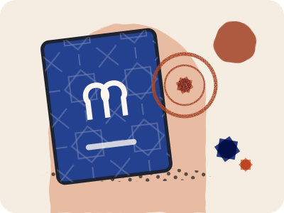
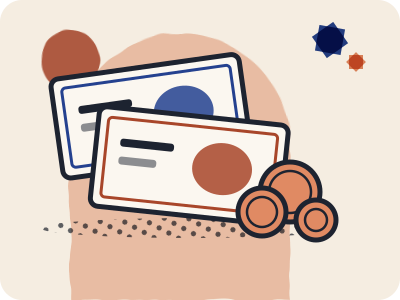
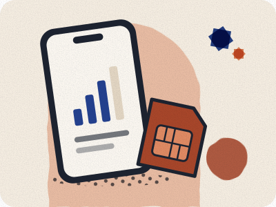
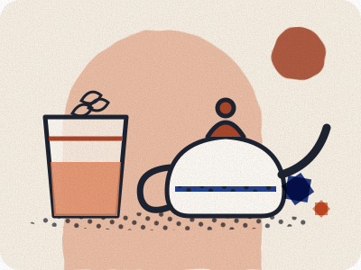

The details.
Made clearer.
Useful preparation, direct source links and questions worth asking.

Arriving in Casablanca
ARRIVAL
Airport to the city
Train or Aérobus from Mohammed V airport, with fares.
Read the guide →STATIONSCasa Voyageurs
Tickets, platforms, luggage and step-free access.
Read the guide →GETTING AROUNDTram and busway
Fares, which ticket to buy, and validating.
Read the guide →ONWARDTo Marrakech by train
A dated example, ticket types and changes.
Read the guide →Jardin Majorelle
TRAIN TRAVEL 02
02 06
06
Check before booking
Compare ticket flexibility and plan the complete journey.
Read the train guide →
01Entry requirements
Find primary-source information for your own circumstances.
Read the guide →02Arrival & transport
Know where to meet and how to reach the door.
Read the guide →
03Money & prices
Compare totals and written inclusions.
Read the guide →
04Phone & connectivity
Avoid assumptions about devices and data plans.
Read the guide →
05Etiquette
Simple ways to ask and agree expectations.
Read the guide →06Safety preparation
Current advice and a plan for changing conditions.
Read the guide →YOUR NEXT STEP
Open the checklist ↗Keep track of your preparations.
Tick off the essentials and print a copy.